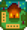

Anfangen
| Anfangen | Der Spieler |
Optionen | Steuerung | Mobile Steuerungen |
Gesundheit | Energie | Fähigkeiten | Tageszyklus |
Stardew Valley ist ein zeitlich unbegrenztes Spiel, welches dem Spieler erlaubt, Errungenschaften zeitunabhängig zu erreichen.
Es gibt diverse Wege, um an Geld zu gelangen, was durch die verschiedenen Aktivitäten wie Hofarbeit, Fischen, Sammeln, Bergbau, Kampf, die Herstellung von Gegenständen, Kochen, das Verschenken von Items, die Erfüllung von Aufträgen und den Wiederaufbau des Gemeinschaftszentrums erreicht wird.
Die Charaktererstellung
- Hauptartikel: Der Spieler
Der Dialog für die Charaktererstellung erlaubt die Anpassung von Aussehen sowie Geschlecht, Name, Name der Farm, einer Sache, die man gerne mag, und die Vorliebe für eine Tierart.
- Es stehen 2 Geschlechter, 24 Hautfarben, 74 Frisuren, 112 Oberteile, 4 Hosen, 31 Accessoires und 10 Tiere (5 Katzen und 5 Hunde) zur Auswahl.
- Die Schieberegler neben Augenfarbe, Haarfarbe und Farbe der Hose lassen Farbton, Sättigung und Helligkeit einstellen.
- Über die Würfelschaltfläche kann das Aussehen durch Zufall bestimmt werden.
- Die Vorliebe für eine Tierart bestimmt, welches Tier man später als Haustier bekommt.
- Die Wahl des Geschlechts hat keine Auswirkung auf das Heiraten im Spiel.
- Die Option "Intro überspringen" lässt einen das Spiel direkt in Stardew Valley beginnen.
- Entsprechend der Eingabe, was man gerne mag, wird sich beim Verzehr einer
 Sternenfall-Frucht daran erinnert. Sollte der Spieler hier ConcernedApe angegeben haben, bedankt sich der Entwickler mit folgenden Worten:
Sternenfall-Frucht daran erinnert. Sollte der Spieler hier ConcernedApe angegeben haben, bedankt sich der Entwickler mit folgenden Worten:
Wenn der Spieler das Wort Stardew (großes S) eingibt, erscheint folgende Nachricht.
Der Spieler kann im Verlauf des Spiels sein Aussehen für  500 G beim Zauberer verändern, sobald er einen Freundschaftslevel von 4 Herzen erreicht hat.
500 G beim Zauberer verändern, sobald er einen Freundschaftslevel von 4 Herzen erreicht hat.
Im Menü für die Charaktererstellung gibt es eine Schaltfläche mit einem Schraubenschlüssel-Symbol  , die alle Erweiterte Optionen enthält. Diese sind:
, die alle Erweiterte Optionen enthält. Diese sind:
- Ändern der Bündel im Gemeinschaftszentrums zwischen normal und remixed
- Ermöglichen, dass das Gemeinschaftszentrum im ersten Jahr abgeschlossen werden kann, indem garantiert wird, dass der Reisewagen im ersten Jahr einen Rotkohl-Samen verkauft
- Ändern der Truhenbelohnungen in den Minen zwischen normal und remixed
- Ermöglichen, dass Monster auf der Farm erscheinen können
- Ändern der Gewinnspanne
- Auswählen, wie viele Start Hütten es gibt und wie weit auseinander diese stehen
- Festlegen der Zufallsgenerierung im Spiel vom neuen Zufallssystem auf das alte
Farm-Layout
- Hauptartikel: Hoftypen
Der Spieler hat die Möglichkeit, eines von acht verschiedenen Layouts für seinen Hof zu wählen. Jedes dieser Layouts hat einzigartige Vorteile und fördert somit bestimmte Fähigkeiten.
Die Auswahl eines Layouts ist permanent und kann im Spielverlauf nicht mehr verändert werden. Die Karten aller Versionen sind gleich groß, allerdings unterscheiden sie sich in der nutzbaren/bewirtschaftbaren/bebaubaren Fläche.
| Name | Beschreibung | Bevorzugte Fähigkeit | |
|---|---|---|---|
| Standard-Hof | Die Original-Karte mit viel Platz für Pflanzen und Tiere. | ||
|  | Wald-Hof | Der Wald limitiert die Hoffläche, allerdings gibt es hier sich erneuernde Baumstümpfe und es erscheinen saisonabhängige Sammler-Items. Das Unkraut, welches hier wächst, ist von der Erscheinung gleich des anderen Unkrauts, hat allerdings die einzigartige Eigenschaft, beim Entfernen immer gemischte Samen fallen zu lassen. | |
| Bergspitzen-Hof | Viele Höhenunterschiede schränken die Bewirtschaftbarkeit ein, dafür gibt es ein Bergbau-Areal im Südwesten der Karte, in dem Erze und Geoden erscheinen. | ||
| Flussbett-Hof | Ein Großteil dieser Karte ist Wasser, dementsprechend gering fällt die Fläche für Anbau und Tierzucht aus. Im Vergleich zu den anderen Karten lohnt sich hier allerdings die Fischerei... Alle Fische, die in der Stadt gefangen werden können, gibt es auch hier. | ||
| Wildnis-Hof | Dieses Layout bietet einen großen See in der südwestlichen Ecke und eine Erhebung im Osten und Süden. Monster treiben des Nachts ihr Unwesen auf dem Hof. Der Golem der Wildnis ist einzigartig auf dieser Karte. Ihre Werte steigen mit dem Kampflevel des Spielers. | ||
| Ecken-Hof | Dieses Layout bietet sich für den Mehrspielermodus an. Die Fläche der Farm wird durch ein Gebirge in vier gleich große Ecken unterteilt. Jede Ecke bietet Vorteile und repräsentiert eine kleine Version der Standard-, Wald-, Berg- und Flussfarm. Die Arbeitsfläche für Landwirtschaft ist insgesamt aber kleiner als beim Standardhof. | ||
| Strand-Hof | Der Strand-Hof bietet ein besonderes Erlebnis vor allem für erfahrene Spieler, da die Sprinkler auf dem sandigen Boden nicht funktionieren und dieser große Teile der Farm bedeckt. Außerdem werden manchmal Versorgungskisten angespült und es können auch Wald- und Strandfische geangelt werden. | ||
| Meadowlands-Hof | Der Meadowlands-Hof ist abwechslungsreich aufgebaut mit einem Fluss und zwei kleinen Seen. Der Hof startet mit einem Stall und zwei Hühnern. Zähes, blaues Gras wächst auf dem Hof, welches eine verbesserte Nahrungsquelle für deine Tiere bietet. Insgesamt ermutigt der Hof zum Farmen, insbesondere zur Tierzucht. | ||
Steuerung
- Hauptartikel: Steuerung
Alle Tasten können im Menü im Reiter Optionen neu zugewiesen werden 
| Taste | Beschreibung |
|---|---|
| W A S D |
W Nach oben bewegen A Nach links bewegen S Nach unten bewegen D Nach rechts bewegen |
| Werkzeug benutzen oder Gegenstand platzieren | |
| Prüfen/Interaktion | |
| Escape, E | Menü öffnen |
| F | Hofbuch öffnen |
| M | Karte öffnen |
| Y | Emote Menü öffnen |
| Gegenstand wechseln | |
| Tab | Reihe verschieben |
| Shift Links | Laufen |
| ?, T | Chat-Box öffnen |
| 1 - 0, - , + | Inventar Hotkeys |
| F4 | Screenshot-Modus |
Mach dich für deinen ersten Anbau bereit
Auf allen Höfen außer den Meadowlands, gibt dir Bürgermeister Lewis zu Beginn 15 Pastinaken-Saat. Auf dem Meadowlands-Hof erhältst du stattdessen 15 Heu.
- Nutze die Axt, Spitzhacke und Sense um Holz, Steine, Gras und Büsche auf einer Fläche von etwa 15 Quadraten zu entfernen.
- Verwende die Hacke, um die Erde aufzureißen und pflanze die 15 Pastinaken-Saat, welche du von Bürgermeister Lewis erhalten hast an.
- Mit der Gießkanne bewässerst du nun die Samen und die Erde.
- Fahre mit dem Bewässern der Nutzpflanzen täglich fort, bis sie zum Ernten bereit sind. Deine Pastinaken sind nach 4 Tagen soweit.
- Ein Tipp: Die gewöhnlichen Bäume (Ahorn, Eiche & Kiefer) benötigen alle die gleiche Anzahl an Schlägen: 10 Schläge mit der Axt. Die Stümpfe benötigen nur 5 Schläge.
Gießkanne
- Hauptartikel: Gießkannen
Nutzpflanzen müssen, damit sie wachsen, täglich bewässert werden. Die Gießkanne, die du zu Beginn erhältst, kann nur ein Feld auf einmal bewässern. Sie kann an jedem Teich, Fluss oder anderen Wasserquellen befüllt werden, dieses umfasst auch die Spüle in der Küche, nachdem du das erste Mal dein Haus verbessert hast.
Deine Pflanzen können einen Tag ohne Wasser aushalten. Es ist also möglich nur jeden zweiten Tag zu gießen, allerdings wachsen die Pflanzen dadurch auch langsamer.
Die beste Zeit, um die Gießkanne zu verbessern, ist ein Tag bevor es regnen soll, damit deine Pflanzen trotzdem Wasser erhalten. Alternativ sind auch der vorletzte sowie der letzte Tag einer Saison sinnvoll. Der Schmied braucht zwei Tage, um ein Werkzeug zu verbessern.
Ein weiterer Weg der Bewässerung sind Sprinkler. Sie bewässern je nach Typ eine vorgegebene Anzahl an umliegenden Feldern: die vier direkt anliegenden Felder, die acht umgebenden Felder (3x3 Areal) und die 24 angrenzenden Felder (5x5 Areal). Mit einer Druck-Drüse kann die Reichweite der Sprinkler erhöht werden.
Energie
- Hauptartikel: Energie
Deine Energie grenzt dich in deiner Produktivität ein. Ohne sie ist ein Arbeiten nicht möglich. Um deinen Energielevel wieder zu erhöhen, ist es möglich zu essen. Dies geschieht, wenn ein essbares Item in deinem Inventar markiert ist, du mit der rechten Maustaste klickst oder X auf der Tastatur drückst und anschließend mit "Ja" bestätigst. Die meisten Pflanzen und Sammelgegenstände können gegessen werden.
Schlaf am Ende des Tages regeneriert ebenso den Energielevel des Spielers. Sollte man nach Mitternacht zu Bett gehen, so werden nicht 100% wiederhergestellt. Ist der Spieler erschöpft, wenn er zu Bett geht, oder ist er nach zwei Uhr nachts noch nicht im Bett, wird er mit der Hälfte der Energie in seinem Bett erwachen.
Im Mehrspielermodus erhält man langsam Energie, wenn man sich ins Bett legt ohne Schlafen zu gehen.
Am dritten Sommertag entfernt ein Erdbeben die Steine, welche den Weg zum Spa (nördlich des Schreinerladens) blockieren. Das Schwimmbad regeneriert die Energie innerhalb kurzer Zeit.
Fähigkeiten
- Hauptartikel: Fähigkeiten
Um den Fähigkeitslevel zu erhöhen, muss der Spieler damit verbundene Aktionen durchführen. Erfahrungspunkte für Landwirtschaft werden durch das Ernten von Feldfrüchten erhalten. Sammeln erzielt XP durch das Sammeln von Items sowie das Fällen von Bäumen. Minenarbeit XP werden durch das Aufbrechen von Steinen und Erzadern gewonnen. Fischen und Leeren von Krabbenreusen steigert das Fischerei-Level. Das Töten von Monstern erhöht das Kampf-Level.
Mit dem Anstieg der Level erhält der Spieler bei jedem Level (mit Ausnahme von Level 5 und 10) ein neues Rezept für das Crafting-System.
Bei Level 5 und 10 hat man die Wahl zu einer Profession im jeweiligen Fähigkeitsbereich. Die Profession (Level 5 und 10) gibt dem Spieler die Möglichkeit seine Produkte mehr Wert sein zu lassen, die Anzahl der zu erhaltenden Items zu erhöhen, die Kosten im Crafting-System zu senken und andere positive Effekte. Je nach Wahl auf Level 5 verändern sich die Optionen auf Level 10.
Dorfbewohner und Freundschaften
- Hauptartikel: Freundschaft, Freundschaft
- Siehe auch: Ehe und Liste aller Geschenke
Das Überreichen von Geschenken an Dorfbewohner steigert das Freundschaftslevel. Du kannst mit einem Dorfbewohner reden, indem du rechtsklickst. Um jemandem ein Geschenk zu machen, wird es in der Inventarleiste ausgewählt oder mittels Hotkey aktiviert und dann mittels Linksklick an die Person überreicht.
Mit zunehmender Freundschaft senden einem die Dorfbewohner Koch-Rezepte oder Essen per Post, erlauben es, dass du ihre Privatgemächer betrittst, und reden anders mit dir. Auch einzigartige Zwischensequenzen und Interaktionen mit den Personen können über einen höheren Freundschaftslevel erreicht werden. Nur durch einen hohen Freundschaftslevel kann der Spieler den Weg zur Heirat mit einem möglichen Partner beschreiten.
Wenn du mit jemandem redest oder ihnen ein Geschenk gibst, bekommst du Freundschaftspunkte. Du benötigst 250 Punkte für ein Herz. Reden bringt dir +20 Punkte, was du einmal pro Tag machen kannst. Pro Woche kannst du 2 Geschenke jemandem übergeben, pro Tag allerdings nur eines.
Fernseher
- Hauptartikel: Fernsehen
Der Fernseher bietet nützliche Informationen wie Wettervorhersage, Wahrsagen für dein tägliches Glück, Gratis Kochrezepte und andere Tipps. Der Fernseher befindet sich seit Spielanfang bereits im Haus.